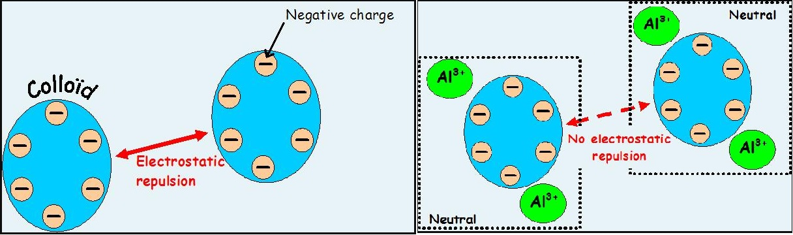
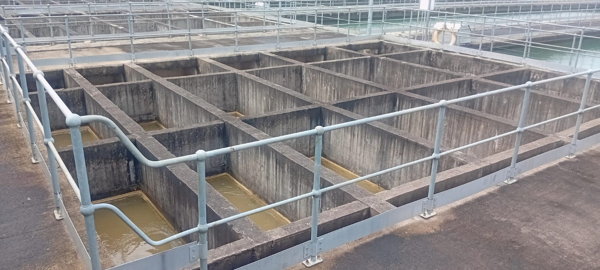
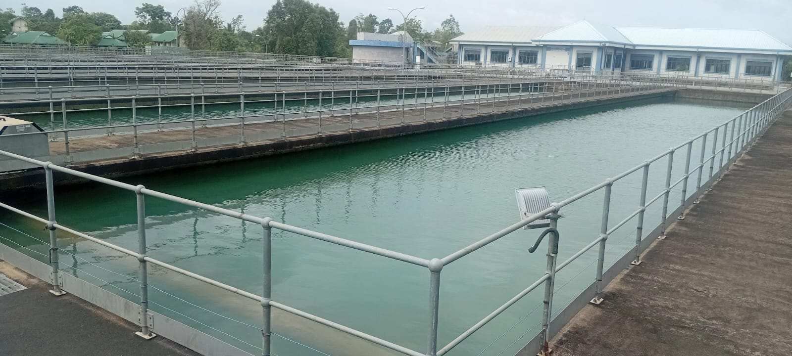
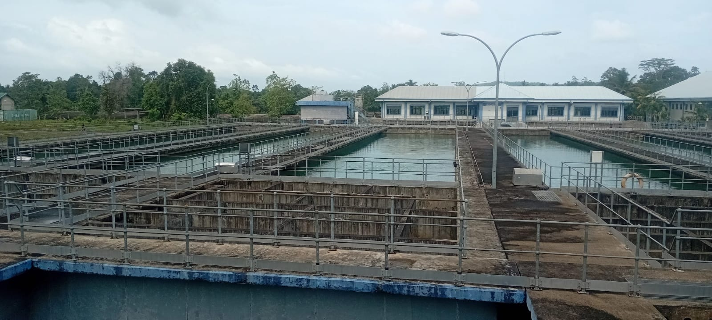

02. Distribution Chamber (බෙදුම් කුටීරය)
තුළු මුවෙහි (Intake) සිට අමු ජල පොම්ප (Raw Water Pumps) මගින් පොම්ප කරනු ලැබූ අමුජලය (Raw Water) 1000mm DI නළ තුළින් පැමිණ මෙම ස්ථානයේ ඇති Receiving Well තුළට පැමිණේ.
මීට අමතරව වැලිපෙරණ (sand filters) සෝදා ගැනීමට යොදා ගත් නිරවුල් ජලය (Backwash Recovery Supernatant Water) නැවත මෙම ස්ථානයටම එක්වීම සිදුවේ.
මෙම ස්ථානයේදී ජලපිරිහදු කිරීමට අවශ්ය පහත ක්රියාවලීන් ප්රධානවශයෙන් සිදුකරයි.
1. Pre Chlorination (පෙර ක්ලෝරීන් යෙදීම)
2. pH Adjustment (අමු අජලයේ pH අගය සැකසීම)
3. Alum Dosing (ඇලම් අමුජලයට මුසු කිරීම)
4. Cogulation (ක්ෂණික කලවම් කිරීම)
5. Flocculation (කුඩා අංශු විශාල පොකුරු බවට පත්වීම)
6. Sedimentation (පතුලට තැන්පත් වීම)
1. Pre Chlorination (පෙර ක්ලෝරීන් යෙදීම)
Pre Chlorination කිරීම මගින් අමු ජලයේ ඇති අහිතකර බැක්ටීරියා වර්ග ,ඇල්ගී වැනි ජෛව ද්රව්ය අරම්භයේදීම ඉවත් කිරීමට හැකිවනු ඇත. එසේම ක්ලෝරීන් යනු හොද ඔක්සිකාරකයක් බැවින් ජලයේ දියවී ඇති අයන ඔක්සිකරනය කිරීම මගින් ඒවා ඉවත් කිරීමද සිදුවේ. එමෙන්ම, ජලයේ ඇති අප්රිය ගඳද මෙය මගින් අඩු කරයි.
නමුත් ක්ලෝරීන් සඳහා ඉතා විශාල වියදමක් යන බැවින් අවශ්ය අවස්ථාවලදී පමණක් pre cholrine යෙදවීම සිදුකරයි.
2. pH Adjustment (අමු අජලයේ pH අගය සැකසීම)
මෙම පවිත්රාගාරයේ කැටිති කාරකය (Coagulant) ලෙස භාවිතා කරන ඇලම් වල ක්රියාකාරීත්වය උපරිම මට්ටමක පවත්වා ගැනීම සඳහා එයට සුදුසු pH පරාසය වන 6.0ත් 7.5ත් අතර අගයක අමු ජලයේ pH අගය පවත්වා ගත යුතුය. අමු ජලයේ pH අගය එම පරාසය තුළ නොමැති අවස්ථාවලදී එය සැකසීම සඳහා හුණු (Lime) යෙදීම සිදුකරයි.
මෙමගින් ඇලම් වල ඉහල ක්රියාකාරීත්වයක් ලබා ගත හැකි වන අතර chemical භාවිතය අඩු කිරීම මගින් ඒ සඳහා යන වියදමද අඩු කරගත හැකිය. එසේම නල වලට හා ටැංකිවලට ආම්ලික ජලය මගින් සිදුවිය හැකි හානියද අවම කරගත හැකිය.
3. Alum Dosing (ඇලම් අමුජලයට මුසු කිරීම)
නිවැරදි pH අගය සකසා ගත් අමු ජලයෙහි ඇති මඩ ගතිය ඉවත් කිරීම සඳහා මඩ කැටිති (flocs) සාඳා ගැනීමට භාවිතා වන කැටිකාරකය(coagulants) වන ඇලම් (Alum හෙවත් Aluminium Sulphate [Al₂(SO₄)₃]) යෙදීම මෙහි ඊලග පියවරයි.
අමුජලයේ ස්වභාවය මත යෙදිය යුතු ඇලම් ප්රමාණය වෙනස්වේ. JAR Test පරීක්ෂණයකින් අනතුරුව යෙදිය යුතු ප්රශස්ථ ඇලම් ප්රමාණය තීරණය කරයි.
4. Cogulation (ක්ෂණික කලවම් කිරීම)
-
ඇලම් වල ප්රතික්රියා කාලය තත්පර 0.2ක් වැනි ඉතා කුඩා කාලයක් බැවින් ජලය සමග මුසුවූ විගස එය ඉතා ඉක්මනින් මිශ්රකිරීම සිදුකල යුතුය. කඳන ජලපවිත්රාගාරයේ මේ සඳහා ජල පිම්ම (hydraulic jump) ක්රමය භාවිතා කරයි.
මේ සඳහා Weir arrangement එකක් භාවිතා කර ඇති අතර මෙමගින් අමුජලය( Raw Water) සමාන කොටස් හයකට බෙදී යන අතර ජලය පහලට වැටීමක් සිදුවීම මගින් ක්ෂණික මිශ්රණයක් සිදුවේ (G value is approximately 400 s-1). එම නිසා මෙම ස්ථානයේදී ඇලම් (Alum) යෙදීම සිදුකරන අතර ඇලම් සමග හොදින් මිශ්ර වූ ජලය කැටිකාරක ටැංකි (Flocculation Tank) වෙත යොමු වීම සිදුවේ.

Chemical Reaction of Alum with Water (ඇලම් සමග ජලයේ ප්රතික්රියාව)
-
ඇලම් යනු රසායනිකව ඇලුමිනියම් සල්ෆේට් (aluminium sulfate) වන අතර, එය ජලය පිරිසිදු කිරීමේදී ඉතා වැදගත් කාර්යයක් ඉටු කරයි. ඇලම් ජලයට එකතු කළ විට සිදුවන ක්රියාවලිය "පොකුරු ගැසීම" හෝ "skrumping" ලෙස හැඳින්වේ.
1. ධන ආරෝපිත අයන මුදාහැරීම:
ඇලම් (aluminium sulfate) ජලය සමග මිශ්ර වූ විට, එය ජලයේ අඩංගු අණු සමග ප්රතික්රියා කර, ධන ආරෝපිත ඇලුමිනියම් අයන (Al3+ ) මුදාහරී.
2. අංශු උදාසීන කිරීම:
අමු ජලයේ අඩංගු කුඩා අංශු (clay, silt, organic matter) සාමාන්යයෙන් සෘණ ආරෝපිත (negatively charged)වේ. මෙම සෘණ ආරෝපණය නිසා එම අංශු එකිනෙකා විකර්ෂණය කරමින් ජලයේ විසිරී පවතී. ඇලම් මගින් මුදා හරින ධන ආරෝපිත ඇලුමිනියම් අයන, මෙම සෘණ ආරෝපිත අංශු සමග සම්බන්ධ වී ඒවායේ ආරෝපණය උදාසීන කරයි.

5. Flocculation (කුඩා අංශු විශාල පොකුරු බවට කිරීම)
-
ඇලුමිනියම් අයන සමග එක්වීමෙන් ආරෝපණය උදාසීන වූ පසු, එම කුඩා අංශු එකිනෙකා සමග පහසුවෙන් එකතු වේ. මෙහිදී මෙම කුඩා අංශු එකතු වී විශාල බර පොකුරු (flocs) බවට පත්වේ. මෙම පොකුරු පියවි ඇසට පෙනෙන තරමට විශාල විය හැකිය. මෙම ක්රියාවලිය flocculation ලෙස හැදින්වේ.
මෙසේ විශාල පොකුරු සෑදීමට නම් මෙම කුඩා අංශු එකිනෙකා ලංවීම හා ගැටීම සිදුවිය යුතුය. මේ සඳහා කඳන ජලපවිත්රාගාරය තුළ Conventional Flocculation ක්රමය භාවිතා කරයි. එනම් වර්ගඵලය අඩු ටැංකියක සිට ක්රමානුකූල්ව වැඩි ටැංකියක් වෙත ජලය ගලායාමට සැලැස්වීම. මෙහිදී වර්ගඵලය අඩු ටැංකියේ ජලයේ වේගය වැඩිවෙන අතර ක්රමයෙන් විශාල ටැංකි වෙත පැමිණීමේදී ජලයේ වේගය අඩුවේ. මෙහිදී කුඩා ටැංකි වලදී ඉතා කුඩා මඩ අංශු එකිනෙක ඇලී විශාල මඩ අංශු සෑදීම සිදුවෙන අතර විශාල ටැංකි තුළදී මෙම විශාල මඩ අංශු තවදුරටත් එකිනෙක එක්වි තවත් විශාල ඇසට පෙනෙන මඩ අංශු බවට පත්වීම සිදුවේ. මේසේ සෑදුණු විශාල මඩ අංශු තැම්පත් කර ගැනීම සඳහා Sedimentation ටැංකි තුළට යොමු කිරීම සිදුකරයි.

6. Sedimentation (පතුලට තැන්පත් වීම)- මෙම විශාල, බර පොකුරු ජලයට වඩා ඝනත්වයෙන් වැඩි බැවින්, ඒවා ගුරුත්වාකර්ෂණය හේතුවෙන් ජලයේ පතුලට තැන්පත් වේ. මෙම ක්රියාවලිය තැන්පත් වීම (sedimentation) ලෙස හැඳින්වේ. කඳන ජලපවිත්රාගාරය තුළ මේ සඳහා විශාල ප්රමාණයේ Sedimentation ටැංකි හයක් (06) භාවිතා කරයි.
 